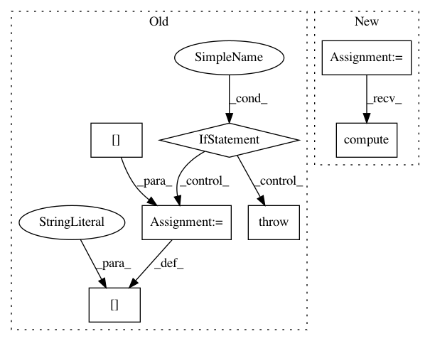

f9b3bc145e981a05dd27abc8f2987692bf4d3b5c,pyntcloud/pyntcloud.py,PyntCloud,get_filter,#PyntCloud#Any#,280
Before Change
kwargs["points"] = self.xyz
if name in F_XYZ:
valid_args = crosscheck_kwargs_function(kwargs, F_XYZ[name])
return F_XYZ[name](**valid_args)
elif name in F_KDTREE:
kwargs["kdtree"] = self.kdtrees[kwargs["kdtree"]]
valid_args = crosscheck_kwargs_function(kwargs, F_KDTREE[name])
return F_KDTREE[name](**valid_args)
else:
raise ValueError("Unsupported filter; supported filters are: {}".format(ALL_FILTERS))
def get_sample(self, name, **kwargs):
Returns arbitrary number of points sampled by selected method
if name in S_POINTS:
After Change
if name in ALL_FILTERS:
F = ALL_FILTERS[name](self, **kwargs)
F.extract_info()
return F.compute()
else:
raise ValueError("Unsupported filter. Check docstring")
In pattern: SUPERPATTERN
Frequency: 3
Non-data size: 7
Instances
Project Name: daavoo/pyntcloud
Commit Name: f9b3bc145e981a05dd27abc8f2987692bf4d3b5c
Time: 2017-03-09
Author: daviddelaiglesiacastro@gmail.com
File Name: pyntcloud/pyntcloud.py
Class Name: PyntCloud
Method Name: get_filter
Project Name: cmu-db/ottertune
Commit Name: 01b4ec3f531e07b8c4a32a13288c963ad8b4b843
Time: 2019-10-14
Author: dvanaken@cs.cmu.edu
File Name: server/website/website/db/base/parser.py
Class Name: BaseParser
Method Name: convert_dbms_metrics
Project Name: cmu-db/ottertune
Commit Name: 01b4ec3f531e07b8c4a32a13288c963ad8b4b843
Time: 2019-10-14
Author: dvanaken@cs.cmu.edu
File Name: server/website/website/db/myrocks/parser.py
Class Name: MyRocksParser
Method Name: convert_dbms_metrics